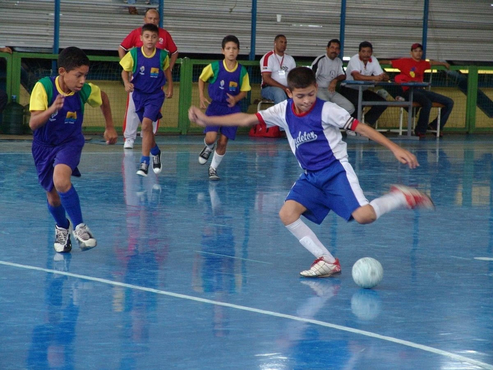

Partida de futebol de salão categoria infantil.
| Informações importantes | Outros nomes | Em alguns países utiliza-se o acrônimo futsal. No Brasil este acrônimo é utilizado. |
| Autoridade máxima | FIFA(Futsal) AMF(Futebol de Salão) |
|
| Ano de criação | 1930(origem como recreação) 1949(oficialização das regras) |
|
| Origem |
Uruguai Brasil |
|
| Participantes | 5 por equipe |
As equipes, tal como no futebol, têm como objetivo colocar a bola na meta adversária, definida por dois postes verticais limitados pela altura por uma trave horizontal. O goleiro, último jogador responsável por evitar o gol, é o único autorizado a segurar a bola com as mãos.